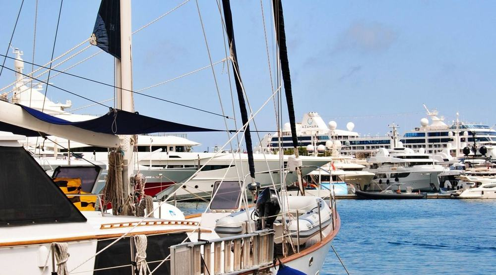

Το «Επικοινωνήστε μαζί μας» πριν το footer
Τέσσερις αντικαταστάσεις, και η εκδοχή 0 όπου φεύγει τελείως. Φαίνονται ανάμεσα στις Συχνές ερωτήσεις και στο footer, όπως είναι στη σελίδα.
Συχνές ερωτήσεις
Πού συναντιόμαστε;
Τι γίνεται αν έχει κακοκαιρία;
Χρειάζεται να ξέρω κολύμπι;
Έχετε κάποια ερώτηση;Απαντάμε αμέσως, από τις 8:00 ως τις 22:00.

Επικοινωνία
Θα τα πούμε στη Μαρίνα Ζέας
- Ακτή Θεμιστοκλέους 42, ΠειραιάςΠροβλήτα Β, δίπλα στο μπλε περίπτερο
- +30 210 412 3456Κάθε μέρα, 8:00 με 22:00
- info@aegean-blue.exampleΑπαντάμε μέσα στη μέρα
Μιλήστε με τον Γιώργο
Κυβερνήτης και ιδιοκτήτης. Σας λέει τι καιρό θα έχουμε και ποια εκδρομή ταιριάζει στην παρέα σας.
Αν φύγει (0), τίποτα δεν χάνεται: το τηλέφωνο, το email και η διεύθυνση είναι ήδη στο footer, και η σελίδα «Επικοινωνία» στο μενού.